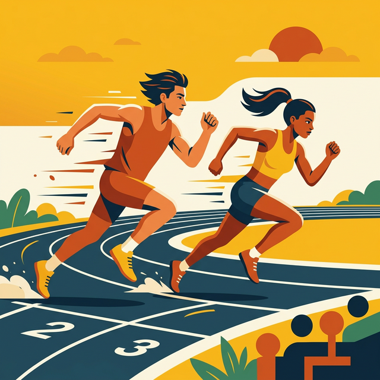

Rapidez y Velocidad

Lección 5 | 1ro. Básico
¿Qué tan rápido puedes ser? En esta lección descubriremos la ciencia detrás del movimiento y cómo reaccionar en segundos.
Objetivos de Aprendizaje
🎯 1. Diferenciar los conceptos de rapidez y velocidad física.
🎯 2. Mejorar el tiempo de reacción ante estímulos externos.
🎯 3. Practicar desplazamientos veloces con seguridad para evitar lesiones.
¿Eres veloz?
Si un auto recorre 100 metros en línea recta y una persona corre 100 metros dando vueltas, ¿quién llegó con más velocidad?
¡La dirección importa más de lo que crees!
Vocabulario de Acción
Rapidez
Es qué tan rápido se mueve algo, sin importar hacia dónde va.
Velocidad
Es la rapidez combinada con una dirección específica.
Reacción
El tiempo que tardas en empezar a moverte tras una señal.
Rapidez vs Velocidad
Aunque suenan igual, tienen una diferencia científica clave:
🏃 Rapidez: Es una magnitud escalar (distancia dividida por tiempo).
➡️ Velocidad: Es un vector (desplazamiento dividido por tiempo en una dirección).
Seguridad al Correr
Correr a máxima potencia somete a tus músculos a mucha tensión. Para evitar desgarros:
- Realiza un calentamiento dinámico de al menos 10 minutos.
- Usa calzado adecuado con buen agarre.
- No frenes en seco; disminuye la velocidad gradualmente.
El Motor del Corredor
Haz clic en los puntos rojos para ver qué músculos te dan el "impulso" para la velocidad.
Desafío de Conceptos
Un avión vuela a 800 km/h hacia el Norte. ¿De qué estamos hablando?
Reto de Reacción
Cuando el semáforo cambie a color VERDE, haz clic rápido en el botón.
Técnica de Carrera
¿Qué debes hacer con tus brazos para correr más rápido?
Reflexión Veloz
"Hoy aprendí que la velocidad no es solo correr rápido, sino saber hacia dónde voy y cómo reaccionar a tiempo."
¿En qué deporte crees que es más importante el tiempo de reacción?
¡Meta Alcanzada!

¡Eres un Rayo!
Has completado la Lección 5 con una rapidez increíble. ¡Sigue entrenando tu mente y tu cuerpo!